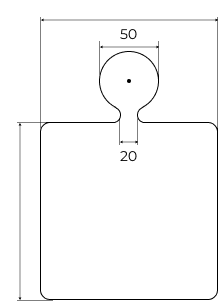

Квадрат
МАГАЗИН-КОНСТРУКТОР
ДЕРЕВЯННЫХ ДОСОК
ДЛЯ ПОДАЧИ БЛЮД
здравствуйте! вы в гостях у медведя. С помощью моего конструктора вы сможите за несколько минут создать форму доски для подачи блюд в вашем ресторане и заказать изделия по своему эскизу в мастерской. Польуйтесь небольшими подсказками и пояснениями на каждом этапе. Начнем?
Для начала, мне было бы полезно знать какая кухня в Вашем ресторане!
Выберите форму рабочей поверхности Вашей доски. Вы же уже придумали, что хотите подавать на ней?
Теперь давайте попробуем определиться с размерами рабочей поверхности Вашей доски. В каких-то случаях это легко, в каких-не очень. Но Вы всегда сможете вернуться сюда
150 X 150
Что же, теперь самое интересное! Приделаем к нашей доске ручку. Богатство выбора нисколько не упрощает задачу. Не спешите, пока это всего лишь картинка на экране Вашего устройства и Вы можете легко перебрать разные варианты форм и размеров
Без ручки
Мы уже недалеки от цели, но нужно продумать кое-какие мелочи. Начнём с углов:
С ЕЛЕ ЗАМЕТНЫМ ЗАКРУГЛЕНИЕМ
Теперь выберем форму фаски. Википедия даёт Фаске такое определение: "Поверхность, образованная скосом торцевой кромки материала. Используется в технологических, технических, а также в декоративных и эргономических целях". Но, по медвежачьи, это то, как следует обработать острые грани нашей доски. Не буду обременять Вас богатством выбора:

Минимальное, еле заметное закругление
Теперь выберем форму фаски. Википедия даёт Фаске такое определение: "Поверхность, образованная скосом торцевой кромки материала. Используется в технологических, технических, а также в декоративных и эргономических целях". Но, по медвежачьи, это то, как следует обработать острые грани нашей доски. Не буду обременять Вас богатством выбора:
вариант 1
Теперь займёмся ножками. Если "преподнять" блюдо, которое вы продаёте на дубовой доске над столом, то оно, будет выглять обьемнее и интереснее, Ваши официанты будут благодарны Вам, потому что смогут брать доску со стола одной рукой, а я, медведь, добавлю, что ножки вклееные поперёк волокон сильно и надолго укрепят Вашу доску
вариант 1
Большинство людей спросило:" Нужна дырочка в ручке? Но медведи уважительно называют дырочку "отверстим"? Так стоит, на Ваш згэвгляд проверить в ручке отверстие?
вариант 1
Большинство людей спросило:" Нужна дырочка в ручке? Но медведи уважительно называют дырочку "отверстим"? Так стоит, на Ваш згэвгляд проверить в ручке отверстие?
вариант 1